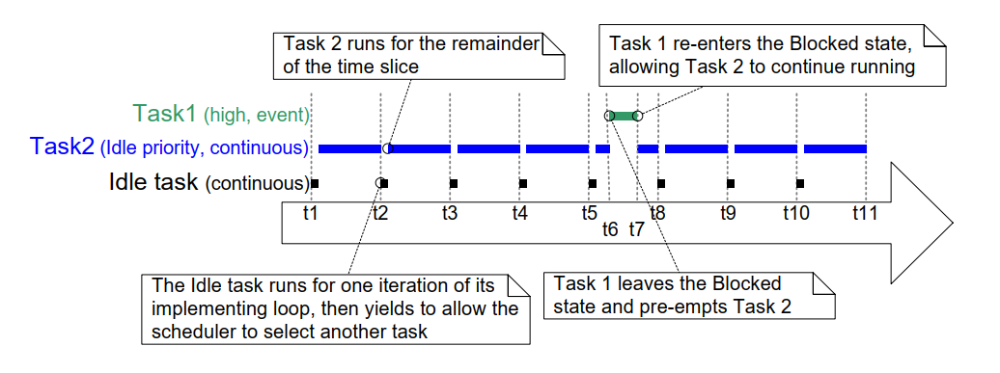

4.12 Scheduling Algorithms
4.12.1 A Recap of Task States and Events
The task that is actually running (using processing time) is in the Running state. On a single core processor there can only be one task in the Running state at any given time. It is also possible to run FreeRTOS on more than one core (asymmetric multiprocessing, or AMP), or have FreeRTOS schedule tasks across multiple cores (symmetric multiprocessing, or SMP). Neither of those scenarios are described here.
Tasks that are not actually running, but are not in either the Blocked state or the Suspended state, are in the Ready state. Tasks in the Ready state are available to be selected by the scheduler as the task to enter the Running state. The scheduler will always choose the highest priority Ready state task to enter the Running state.
Tasks can wait in the Blocked state for an event and they are automatically moved back to the Ready state when the event occurs. Temporal events occur at a particular time, for example, when a block time expires, and are normally used to implement periodic or timeout behavior. Synchronization events occur when a task or interrupt service routine sends information using a task notification, queue, event group, message buffer, stream buffer, or one of the many types of semaphore. They are generally used to signal asynchronous activity, such as data arriving at a peripheral.
4.12.2 Selecting the Scheduling Algorithm
The scheduling algorithm is the software routine that decides which Ready state task to transition into the Running state.
All the examples so far have used the same scheduling algorithm, but the
algorithm can be changed using the configUSE_PREEMPTION and
configUSE_TIME_SLICING configuration constants. Both constants are
defined in FreeRTOSConfig.h.
A third configuration constant, configUSE_TICKLESS_IDLE, also affects
the scheduling algorithm, as its use can result in the tick interrupt
being turned off completely for extended periods.
configUSE_TICKLESS_IDLE is an advanced option provided specifically for
use in applications that must minimize their power consumption.
The descriptions provided in this section assume configUSE_TICKLESS_IDLE
is set to 0, which is the default setting if the constant is left
undefined.
In all possible single core configurations the FreeRTOS scheduler selects tasks that share a priority in turn. This 'take it in turn' policy is often referred to as 'Round Robin Scheduling'. A Round Robin scheduling algorithm does not guarantee time is shared equally between tasks of equal priority, only that Ready state tasks of equal priority enter the Running state in turn.
| Scheduling Algorithm | Prioritized | configUSE_PREEMPTION | configUSE_TIME_SLICING |
|---|---|---|---|
| Preemptive With Time Slicing | Yes | 1 | 1 |
| Preemptive Without Time Slicing | Yes | 1 | 0 |
| Co-Operative | No | 0 | Any |
Table 5 The FreeRTOSConfig.h settings to configure the kernel scheduling algorithms
4.12.3 Prioritized Preemptive Scheduling with Time Slicing
The configuration shown in the Table 5 sets the FreeRTOS scheduler to use a scheduling algorithm called 'Fixed Priority Preemptive Scheduling with Time Slicing', which is the scheduling algorithm used by most small RTOS applications, and the algorithm used by all the examples presented in this book so far. The next table provides a description of the terminology used in the algorithm's name.
An explanation of the terms used to describe the scheduling policy:
-
Fixed Priority
Scheduling algorithms described as 'Fixed Priority' do not change the priority assigned to the tasks being scheduled, but also do not prevent the tasks themselves from changing their own priority or that of other tasks.
-
Preemptive
Preemptive scheduling algorithms will immediately 'preempt' the Running state task if a task that has a priority higher than the Running state task enters the Ready state. Being preempted means being involuntarily moved out of the Running state and into the Ready state (without explicitly yielding or blocking) to allow a different task to enter the Running state. Task preemption can occur at any time, not just in the RTOS tick interrupt.
-
Time Slicing
Time slicing is used to share processing time between tasks of equal priority, even when the tasks do not explicitly yield or enter the Blocked state. Scheduling algorithms described as using Time Slicing select a new task to enter the Running state at the end of each time slice if there are other Ready state tasks that have the same priority as the Running task. A time slice is equal to the time between two RTOS tick interrupts.
Figure 4.18 and Figure 4.19 demonstrate how tasks are scheduled when a fixed priority preemptive scheduling with time slicing algorithm is used. Figure 4.18 shows the sequence in which tasks are selected to enter the Running state when all the tasks in an application have a unique priority. Figure 4.19 shows the sequence in which tasks are selected to enter the Running state when two tasks in an application share a priority.
 Figure 4.18 Execution pattern highlighting task prioritization and preemption
in a hypothetical application in which each task has been assigned a unique
priority
Figure 4.18 Execution pattern highlighting task prioritization and preemption
in a hypothetical application in which each task has been assigned a unique
priority
Referring to Figure 4.18:
-
Idle Task
The idle task is running at the lowest priority, so it gets preempted every time a higher priority task enters the Ready state, for example, at times t3, t5 and t9.
-
Task 3
Task 3 is an event-driven task that executes with a relatively low priority, but above the Idle priority. It spends most of its time in the Blocked state waiting for its event of interest, transitioning from the Blocked state to the Ready state each time the event occurs. All FreeRTOS inter-task communication mechanisms (task notifications, queues, semaphores, event groups, etc.) can be used to signal events and unblock tasks in this way.
Events occur at times t3 and t5, and also somewhere between t9 and t12. The events occurring at times t3 and t5 are processed immediately because, at these times, Task 3 is the highest priority task that is able to run. The event that occurs somewhere between times t9 and t12 is not processed until t12 because, until then, the higher priority tasks Task 1 and Task 2 are still executing. It is only at time t12 that both Task 1 and Task 2 are in the Blocked state, making Task 3 the highest priority Ready state task.
-
Task 2
Task 2 is a periodic task that executes at a priority above the priority of Task 3, but below the priority of Task 1. The task's period interval means Task 2 wants to execute at times t1, t6, and t9.
At time t6, Task 3 is in the Running state, but Task 2 has the higher relative priority so preempts Task 3 and starts executing immediately. Task 2 completes its processing and re-enters the Blocked state at time t7, at which point Task 3 can re-enter the Running state to complete its processing. Task 3 itself Blocks at time t8.
-
Task 1
Task 1 is also an event-driven task. It executes with the highest priority of all, so can preempt any other task in the system. The only Task 1 event shown occurs at time t10, at which time Task 1 preempts Task 2. Task 2 can complete its processing only after Task 1 has re-entered the Blocked state at time t11.
 Figure 4.19 Execution pattern highlighting task prioritization and time slicing
in a hypothetical application in which two tasks run at the same priority
Figure 4.19 Execution pattern highlighting task prioritization and time slicing
in a hypothetical application in which two tasks run at the same priority
Referring to Figure 4.19:
-
The Idle Task and Task 2
The Idle task and Task 2 are both continuous processing tasks, and both have a priority of 0 (the lowest possible priority). The scheduler only allocates processing time to the priority 0 tasks when there are no higher priority tasks that are able to run, and shares the time that is allocated to the priority 0 tasks by time slicing. A new time slice starts on each tick interrupt, which in Figure 4.19 occurs at times t1, t2, t3, t4, t5, t8, t9, t10 and t11.
The Idle task and Task 2 enter the Running state in turn, which can result in both tasks being in the Running state for part of the same time slice, as happens between time t5 and time t8.
-
Task 1
The priority of Task 1 is higher than the Idle priority. Task 1 is an event driven task that spends most of its time in the Blocked state waiting for its event of interest, transitioning from the Blocked state to the Ready state each time the event occurs.
The event of interest occurs at time t6. At t6 Task 1 becomes the highest priority task that is able to run, and therefore Task 1 preempts the Idle task part way through a time slice. Processing of the event completes at time t7, at which point Task 1 re-enters the Blocked state.
Figure 4.19 shows the Idle task sharing processing time with a task
created by the application writer. Allocating that much processing time
to the Idle task might not be desirable if the Idle priority tasks
created by the application writer have work to do, but the Idle task
does not. The configIDLE_SHOULD_YIELD compile time configuration
constant can be used to change how the Idle task is scheduled:
-
If
configIDLE_SHOULD_YIELDis set to 0 then the Idle task remains in the Running state for the entirety of its time slice, unless it is preempted by a higher priority task. -
If
configIDLE_SHOULD_YIELDis set to 1 then the Idle task yields (voluntarily gives up whatever remains of its allocated time slice) on each iteration of its loop if there are other Idle priority tasks in the Ready state.
The execution pattern shown in Figure 4.19 is what would be observed when
configIDLE_SHOULD_YIELD is set to 0. The execution pattern shown in
Figure 4.20 is what would be observed in the same scenario when
configIDLE_SHOULD_YIELD is set to 1.

Figure 4.20 The execution pattern for the same scenario as shown in Figure 4.19,
but this time with configIDLE_SHOULD_YIELD set to 1
Figure 4.20 also shows that when configIDLE_SHOULD_YIELD is set to 1, the
task selected to enter the Running state after the Idle task does not
execute for an entire time slice, but instead executes for whatever
remains of the time slice during which the Idle task yielded.
4.12.4 Prioritized Preemptive Scheduling without Time Slicing
Prioritized Preemptive Scheduling without time slicing maintains the same task selection and preemption algorithms as described in the previous section, but does not use time slicing to share processing time between tasks of equal priority.
The Table 5 shows the FreeRTOSConfig.h settings that configure the FreeRTOS scheduler to use prioritized preemptive scheduling without time slicing.
As was demonstrated in Figure 4.19, if time slicing is used, and there is more than one ready state task at the highest priority that is able to run, then the scheduler selects a new task to enter the Running state during each RTOS tick interrupt (a tick interrupt marking the end of a time slice). If time slicing is not used, then the scheduler only selects a new task to enter the Running state when either:
-
A higher priority task enters the Ready state.
-
The task in the Running state enters the Blocked or Suspended state.
There are fewer task context switches when time slicing is not used than when time slicing is used. Therefore, turning time slicing off results in a reduction in the scheduler's processing overhead. However, turning time slicing off can also result in tasks of equal priority receiving greatly different amounts of processing time, a scenario demonstrated by Figure 4.21. For this reason, running the scheduler without time slicing is considered an advanced technique that should only be used by experienced users.
 Figure 4.21 Execution pattern that demonstrates how tasks of equal priority can
receive hugely different amounts of processing time when time slicing is not used
Figure 4.21 Execution pattern that demonstrates how tasks of equal priority can
receive hugely different amounts of processing time when time slicing is not used
Referring to Figure 4.21, which assumes configIDLE_SHOULD_YIELD is set to 0:
-
Tick Interrupts
Tick interrupts occur at times t1, t2, t3, t4, t5, t8, t11, t12 and t13.
-
Task 1
Task 1 is a high priority event driven task that spends most of its time in the Blocked state waiting for its event of interest. Task 1 transitions from the Blocked state to the Ready state (and subsequently, as it is the highest priority Ready state task, on into the Running state) each time the event occurs. Figure 4.21 shows Task 1 processing an event between times t6 and t7, then again between times t9 and t10.
-
The Idle Task and Task 2
The Idle task and Task 2 are both continuous processing tasks, and both have a priority of 0 (the idle priority). Continuous processing tasks do not enter the Blocked state.
Time slicing is not being used, so an idle priority task that is in the Running state will remain in the Running state until it is preempted by the higher priority Task 1.
In Figure 4.21 the Idle task starts running at time t1, and remains in the Running state until it is preempted by Task 1 at time t6, which is more than four complete tick periods after it entered the Running state.
Task 2 starts running at time t7, which is when Task 1 re-enters the Blocked state to wait for another event. Task 2 remains in the Running state until it too is preempted by Task 1 at time t9, which is less than one tick period after it entered the Running state.
At time t10 the Idle task re-enters the Running state, despite having already received more than four times more processing time than Task 2.
4.12.5 Cooperative Scheduling
This book focuses on preemptive scheduling, but FreeRTOS can also use cooperative scheduling. The Table 5 shows the FreeRTOSConfig.h settings that configure the FreeRTOS scheduler to use cooperative scheduling.
When using the cooperative scheduler (and therefore assuming
application-provided interrupt service routines do not explicitly
request context switches) a context switch only occurs when the Running
state task enters the Blocked state, or the Running state task explicitly
yields (manually requests a re-schedule) by calling taskYIELD(). Tasks
are never preempted, so time slicing cannot be used.
Figure 4.22 demonstrates the behavior of the cooperative scheduler. The horizontal dashed lines in Figure 4.22 show when a task is in the Ready state.
 Figure 4.22 Execution pattern demonstrating the behavior of the cooperative scheduler
Figure 4.22 Execution pattern demonstrating the behavior of the cooperative scheduler
Referring to Figure 4.22:
-
Task 1
Task 1 has the highest priority. It starts in the Blocked state, waiting for a semaphore.
At time t3, an interrupt gives the semaphore, causing Task 1 to leave the Blocked state and enter the Ready state (giving semaphores from interrupts is covered in Chapter 6).
At time t3, Task 1 is the highest priority Ready state task, and if the preemptive scheduler had been used Task 1 would become the Running state task. However, as the cooperative scheduler is being used, Task 1 remains in the Ready state until time t4, which is when the Running state task calls
taskYIELD(). -
Task 2
The priority of Task 2 is between that of Task 1 and Task 3. It starts in the Blocked state, waiting for a message that is sent to it by Task 3 at time t2.
At time t2, Task 2 is the highest priority Ready state task, and if the preemptive scheduler had been used Task 2 would become the Running state task. However, as the cooperative scheduler is being used, Task 2 remains in the Ready state until the Running state task either enters the Blocked state or calls
taskYIELD().The Running state task calls
taskYIELD()at time t4, but by then Task 1 is the highest priority Ready state task, so Task 2 does not actually become the Running state task until Task 1 re-enters the Blocked state at time t5.At time t6, Task 2 re-enters the Blocked state to wait for the next message, at which point Task 3 is once again the highest priority Ready state task.
In a multi-tasking application the application writer must take care that a resource is not accessed by more than one task simultaneously, as simultaneous access could corrupt the resource. As an example, consider the following scenario in which the accessed resource is a UART (serial port). Two tasks write strings to the UART; Task 1 writes "abcdefghijklmnop", and Task 2 writes "123456789":
-
Task 1 is in the Running state and starts to write its string. It writes "abcdefg" to the UART, but leaves the Running state before writing any further characters.
-
Task 2 enters the Running state and writes "123456789" to the UART, before leaving the Running state.
-
Task 1 re-enters the Running state and writes the remaining characters of its string to the UART.
In that scenario, what is actually written to the UART is "abcdefg123456789hijklmnop". The string written by Task 1 has not been written to the UART in an unbroken sequence as intended, but instead it has been corrupted, because the string written to the UART by Task 2 appears within it.
Using the cooperative scheduler normally makes it easier to avoid problems caused by simultaneous access than when using the preemptive scheduler1:
-
When you use the preemptive scheduler the Running state task can be preempted at any time, including when a resource it is sharing with another task is in an inconsistent state. As just demonstrated by the UART example, leaving a resource in an inconsistent state can result in data corruption.
-
When you use the cooperative scheduler you control when a switch to another task occurs. You can, therefore, ensure a switch to another task does not occur while a resource is in an inconsistent state.
-
In the above UART example, you can ensure Task 1 does not leave the Running state until after writing its entire string to the UART and, in doing so, remove the possibility of the string being corrupted by the activities of another task.
As demonstrated in Figure 4.22, using the cooperative scheduler makes systems less responsive than when using the preemptive scheduler:
-
When using the preemptive scheduler, the scheduler starts running a task immediately when the task becomes the highest priority Ready state task. This is often essential in real-time systems which must respond to high priority events within a defined time period.
-
When using the cooperative scheduler, a switch to a task that has become the highest priority Ready state task is not performed until the Running state task enters the Blocked state or calls
taskYIELD().
-
Methods of safely sharing resources between tasks are covered later in this book. Resources provided by FreeRTOS itself, such as queues and semaphores, are always safe to share between tasks. ↩